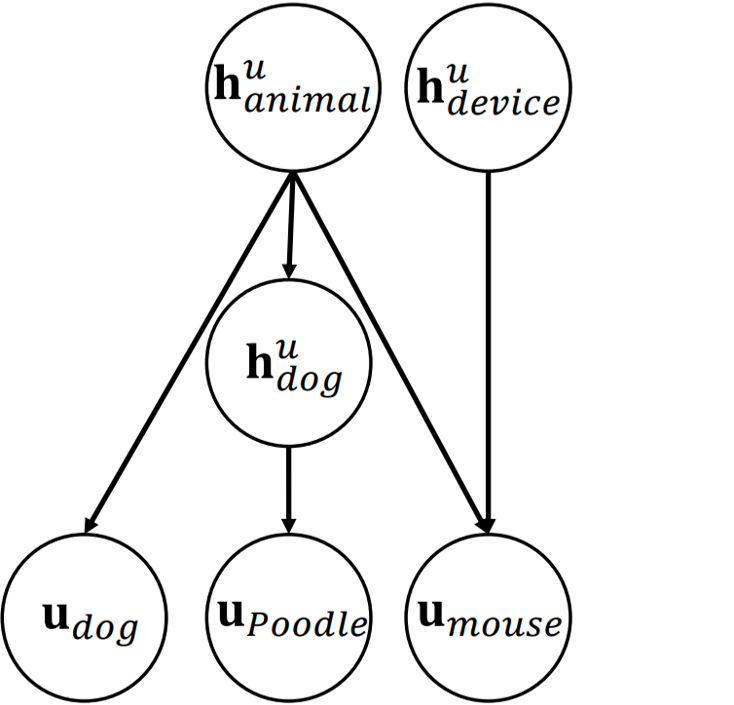

<!DOCTYPE HTML>
<html lang="en">
<head>
    <meta http-equiv="Content-Type" content="text/html; charset=UTF-8">
    <title>Itzik Malkiel</title>
    <meta name="author" content="Itzik Malkiel">
    <meta name="viewport" content="width=device-width, initial-scale=1">
    <link rel="stylesheet" type="text/css" href="stylesheet.css">
    <link rel="icon"
          href="data:image/svg+xml,<svg xmlns=%22http://www.w3.org/2000/svg%22 viewBox=%220 0 100 100%22><text y=%22.9em%22 font-size=%2290%22>🌐</text></svg>">

    <style>
        .circle {
            border-radius: 50%;
            overflow: hidden;
        }

    </style>
    <style>
        /
        .geeks {
            width: 60%;
            height: 300px;
        }

        img {
            width: 100%;
            height: 100%;
            object-fit: cover;
        }
    </style>

    <style>
        @media screen and (max-width: 768px) {
            img {
                width: 100%; /* Makes images take the full width of their container */
                height: auto; /* Adjust height automatically to maintain aspect ratio */
            }

            .text-container { /* Assuming you have text in a container with this class */
                width: 90%; /* Adjust text width */
                margin: 0 auto; /* Center the container */
            }
        }

        @media screen and (max-width: 768px) {
            /*body, p, h1, h2, h3, a, strong { !* Add any other selectors as needed *!*/
            /*    font-size: 10px; !* Adjust this value as needed *!*/
            /*}*/
            a, strong { /* Add any other selectors as needed */
                font-size: 12px; /* Adjust this value as needed */
            }


            /* Specific adjustments for heading sizes if needed */
            h1 {
                font-size: 16px; /* Example for h1 */
            }

            h2 {
                font-size: 14px; /* Example for h2 */
            }

            h3, p, body {
                font-size: 12px; /* Example for h3 */
            }
        }
    </style>

</head>

</html>
<body>
<table style="width:100%;max-width:800px;border:0px;border-spacing:0px;border-collapse:separate;margin-right:auto;margin-left:auto;">
    <tbody>
    <tr style="padding:0px">
        <td style="padding:0px">
            <table style="width:100%;border:0px;border-spacing:0px;border-collapse:separate;margin-right:auto;margin-left:auto;">
                <tbody>
                <tr style="padding:0px">
                    <td style="padding:2.5%;width:63%;vertical-align:middle">
                        <h1 style="text-align:center">Itzik Malkiel</h1>
                        <!--                        <p>abstract</p>-->
<!--                        <p>I'm a Principal Researcher at Microsoft, working on projects in Dynamics 365 for-->
<!--                            Commerce and Intelligent Recommendations. Prior to joining Microsoft, I was a research-->
<!--                            scientist at GE Global Research and a senior software engineer and project leader.-->

<!--                            I hold Ph.D. and M.Sc. degrees in Computer Science from Tel-Aviv University, supervised by-->
<!--                            <a href="http://www.cs.tau.ac.il/~wolf/">Prof. Lior Wolf</a>, and a B.Sc. degree in Computer-->
<!--                            Science from-->
<!--                            the Hebrew University of Jerusalem. </p>-->
<!--                        <p>My current research focuses on machine learning and deep learning and includes topics such-->
<!--                            as natural language understanding, healthcare and medical imaging, recommender systems,-->
<!--                            computer vision, representation learning, and inverse problems.-->
<!--                            &lt;!&ndash;                            Itzik has authored over 45 research papers and patents.&ndash;&gt;-->
<!--                        </p>-->
<!--                        -->
                        <p>I am a Research Scientist at Meta, focusing on foundation models within the GenAI organization. Prior to joining Meta, I was a Principal Researcher at Microsoft, leading research projects in Dynamics 365 Copilot and Intelligent Recommendations. Before that, I was a Research Scientist at GE Global Research, a Senior Software Engineer and Project Leader.

                            I hold Ph.D. and M.Sc. degrees in Computer Science from Tel-Aviv University, supervised by
                            <a href="http://www.cs.tau.ac.il/~wolf/">Prof. Lior Wolf</a>, and a B.Sc. degree in Computer
                            Science from the Hebrew University of Jerusalem. </p>
                        <p>My research focuses on Machine Learning and Deep Learning and includes topics such as generative AI, natural language understanding, computer vision, recommender systems, medical imaging, and inverse problems. I have authored over 50 research papers and patents, receiving several awards, including two Best Paper Awards from the Microsoft Journal of Applied Research and recognition for a Top Cited Paper in Light: Science & Applications, published by Nature.
                            <!--                            Itzik has authored over 45 research papers and patents.-->
                        </p>
                        <p style="text-align:center">
                            <a href="mailto:itzik.malkiel@gmail.com">Email</a> &nbsp;/&nbsp;
                            <!--                            <a href="data/my-CV.pdf">CV</a> &nbsp;/&nbsp;-->
                            <!--                            <a href="data/JonBarron-bio.txt">Bio</a> &nbsp;/&nbsp;-->
                            <a href="https://scholar.google.co.il/citations?user=4VOu-tUAAAAJ&hl=en">Google Scholar</a>
                            &nbsp;/&nbsp;
                            <!--<a href="https://twitter.com/jon_barron">Twitter</a> &nbsp;/&nbsp; -->
                            <a href="https://github.com/ItzikMalkiel">Github</a>
                            &nbsp;/&nbsp;
                            <a href="https://www.linkedin.com/in/itzik-malkiel/">LinkedIn</a>
                        </p>
                    </td>
                    <div class="circle">
                        <td style="padding:2.5%;width:40%;max-width:40%">
                            <a href="images/itzikmalkiel.jpg">
                                
                            </a>
                        </td>
                    </div>
                </tr>
                </tbody>
            </table>
            <table style="width:100%;border:0px;border-spacing:0px;border-collapse:separate;margin-right:auto;margin-left:auto;">
                <tbody>
                <tr>
                    <td style="padding:20px;width:50%;vertical-align:middle">
                        <h2>Research</h2>
                        <p>Representative papers are <span class="highlight">highlighted</span>.</p>
                    </td>
                    <!--                    <td style="padding:20px;width:50%;vertical-align:middle">-->
                    <!--                        <h3>* denotes equal contribution.</h3>-->
                    <!--                    </td>-->
                </tr>
                </tbody>
            </table>


            <table style="width:100%;border:0px;border-spacing:0px;border-collapse:separate;margin-right:auto;margin-left:auto;">
                <tbody>


                               <tr bgcolor="#ffffd0">
                    <td class="geeks" ; style="padding:20px;width:35%;">
                        
                    </td>
                    <td style="padding:20px;width:65%;vertical-align:middle">
                        <h3>InterrogateLLM: Zero-Resource Hallucination Detection in LLM-Generated Answers</h3>
                        <p>Y Yehuda*, <strong>I Malkiel*</strong>, O Barkan, J Weill, R Ronen, N Koenigstein.</p>
                        <p><em>The Association for Computational Linguistics (ACL), 2024. Long paper.</em></p>
                        <!--                        <p>This study introduces SegLLM, an innovative method for call segmentation and topic extraction-->
                        <!--                            that leverages synthetic conversations generated using a large language model (LLM). The-->
                        <!--                            method, which does not require labeled data, encompasses both offline and online phases for-->
                        <!--                            generating and utilizing synthetic sentences across various topics.</p>-->
                    </td>
                </tr>


                <tr>
                    <td class="geeks" ; style="padding:20px;width:35%;">
                        
                    </td>
                    <td style="padding:20px;width:65%;vertical-align:middle">
                        <!--                        <a href="https://ieeexplore.ieee.org/document/9414229">-->
                        <h3>Unsupervised Topic-Conditional Extractive Summarization</h3>
                        <!--                        </a>-->
                        <p><strong>I Malkiel</strong>, Y Yehuda, J Ephrath, O Kats, O Barkan, N Nice, N Koenigstein.</p>
                        <p><em>IEEE International Conference on Acoustics, Speech and Signal Processing (ICASSP),
                            2024.</em></p>
                        <!--                        <p><a href="https://github.com/IrisMalkiel/MetricBERT">github</a></p>-->
                        <!--                        <p>The Topic-Conditional Summarization (TCS) method offers topic-specific summaries by combining-->
                        <!--                            a modified TextRank algorithm with a topic-tuned language model, demonstrating notable-->
                        <!--                            advancements in extractive summarization without requiring ground truth data.</p>-->

                    </td>
                </tr>


                <tr bgcolor="#ffffd0">
                    <td class="geeks" ; style="padding:20px;width:35%;">
                        
                    </td>
                    <td style="padding:20px;width:65%;vertical-align:middle">
                        <h3>SEGLLM: Topic-Oriented Call Segmentation Via LLM-Based Conversation Synthesis</h3>
                        <p><strong>I Malkiel</strong>, U Alon, Y Yehuda, S Keren, O Barkan, R Ronen, N Koenigstein.</p>
                        <p><em>IEEE International Conference on Acoustics, Speech and Signal Processing (ICASSP),
                            2024.</em></p>
                        <!--                        <p>This study introduces SegLLM, an innovative method for call segmentation and topic extraction-->
                        <!--                            that leverages synthetic conversations generated using a large language model (LLM). The-->
                        <!--                            method, which does not require labeled data, encompasses both offline and online phases for-->
                        <!--                            generating and utilizing synthetic sentences across various topics.</p>-->
                    </td>
                </tr>

                <tr>
                    <td style="padding:20px;width:35%;">
                        <!--                        -->
                        <!--                        -->
                        

                    </td>
                    <td style="padding:20px;width:65%;vertical-align:middle">
                        <a href="https://www.computer.org/csdl/proceedings-article/iccv/2023/071800t9950/1TJeUMyIX5u">
                            <h3>Efficient Discovery and Effective Evaluation of Visual Perceptual Similarity: A
                                Benchmark
                                and Beyond</h3>
                        </a>
                        <p>O. Barkan, T. Reiss, J. Weill, O. Katz, R. Hirsch,<strong>I. Malkiel</strong>, N.
                            Koenigstein.</p>
                        <p><em>International Conference on Computer Vision (ICCV), 2023.</em></p>
                        <!--                        <p>Introducing a two-phase approach for visual perceptual similarity measurement in fashion,-->
                        <!--                            this work utilizes over 110K expert-annotated images to refine efficiency and accuracy in-->
                        <!--                            similarity evaluations, benefiting various fields by overcoming traditional metric-->
                        <!--                            limitations.</p>-->
                    </td>
                </tr>

                <tr>
                    <td class="geeks" ; style="padding:20px;width:35%;">
                        
                    </td>
                    <td style="padding:20px;width:65%;vertical-align:middle">
                        <h3>Harnessing GPT for Topic-Based Call Segmentation in Microsoft Dynamics 365 Sales</h3>
                        <p><strong>I Malkiel*</strong>, U Alon*, Y Yehuda, S Keren, N Koenigstein</p>
                        <p><em>International Conference on Information and Knowledge Management (CIKM), Industry Track,
                            2023.</em></p>
                        <!--                        <p>GPT-Calls in Microsoft Dynamics 365 Sales uses a two-phase approach with a GPT model for-->
                        <!--                            efficient and accurate topic-based segmentation of phone call transcriptions, saving time-->
                        <!--                            and resources across various industries.</p>-->
                    </td>
                </tr>


                <tr bgcolor="#ffffd0">
                    <!--                    <td style="padding:40px;width:35%;vertical-align:middle">-->
                    <!--                        <div class="one">-->
                    <td class="geeks" ; style="padding:20px;width:35%;">
                        <!--                            -->
                        
                        <!--                        </div>-->
                    </td>
                    <td style="padding:20px;width:65%;vertical-align:middle">
                        <a href="https://openreview.net/forum?id=W9qI8DwoUFF">
                            <h3>Pre-Training Transformers for Fingerprinting to Improve Stress Prediction in fMRI</h3>
                        </a>
                        <p>G Rosenman*, <strong>I Malkiel*</strong>, A Greental, T Hendler, L Wolf</p>
                        <p><em>Medical Imaging with Deep Learning (MIDL), 2023. Long paper.</em></p>
                        <p><a href="https://github.com/GonyRosenman/MetricfMRI">github</a></p>
                        <!--                        <p>We introduce MetricFMRI, a Transformer-based model and a pre-training procedure for-->
                        <!--                            fingerprinting on fMRI data, to enhance the accuracy of stress predictions.</p>-->
                    </td>
                </tr>


                <tr>
                    <td class="geeks" ; style="padding:20px;width:35%;">
                        
                    </td>
                    <td style="padding:20px;width:65%;vertical-align:middle">
                        <h3>GPT-Distilled Calls Segmentation and Tagging for Conversation Intelligence in Dynamics 365
                            Sales</h3>
                        <p><strong>I Malkiel*</strong>, U Alon*, Y Yehuda, S Keren, N Koenigstein</p>
                        <p><em>Machine Learning, AI and Data Science Conference (MLADS), 2023.</em></p>
                        <p><em>Microsoft Journal of Applied Research (MSJAR), 2023.</em></p>
                        <!--                        <p>We propose a novel method, we call GPT-distilled Calls Segmentation and Tagging (GPT-CST),-->
                        <!--                            for efficient and accurate call segmentation and topic extraction.</p>-->
                    </td>
                </tr>


                <tr>
                    <td class="geeks" ; style="padding:20px;width:35%;">
                        
                    </td>
                    <td style="padding:20px;width:65%;vertical-align:middle">
                        <!--                        <a href="https://mlads2022.azurewebsites.net/pdf/recommendations.pdf">-->
                        <h3>Intelligent Recommendations: Self-Supervised Triplet Training for Textual Item
                            Similarity</h3>
                        <!--                        </a>-->
                        <p><strong>I Malkiel</strong>, D Ginzburg, O Barkan, A Caciularu, Y Weill, O Katz, N Koenigstein
                        </p>
                        <p><em>Machine Learning, AI and Data Science Conference (MLADS), 2022.</em></p>
                        <p><em>Microsoft Journal of Applied Research (MSJAR), 2022.</em></p>
                        <!--                        <p><a href="https://github.com/IrisMalkiel/IntelligentRecommendations">github</a></p>-->
                        <!--                        <p>We propose a self-supervised triplet training approach for intelligent recommendations based-->
                        <!--                            on textual item similarity.</p>-->
                    </td>
                </tr>
                <tr bgcolor="#ffffd0">
                    <td class="geeks" ; style="padding:20px;width:35%;">
                        
                    </td>
                    <td style="padding:20px;width:65%;vertical-align:middle">
                        <a href="https://openreview.net/forum?id=0ZNbiLvTPem">
                            <h3>Self-Supervised Transformers for fMRI representation</h3>
                        </a>
                        <p><strong>I Malkiel*</strong>, G Rosenman*, L Wolf, T Hendler</p>
                        <p><em>Medical Imaging with Deep Learning (MIDL), 2022. Long paper.</em></p>
                        <!--                        <p><a href="https://github.com/IrisMalkiel/SelfSupervisedTransformers">github</a></p>-->
                        <!--                        <p>We introduce self-supervised transformers for fMRI representation to enhance the-->
                        <!--                            understanding of brain activity.</p>-->
                    </td>
                </tr>
                <tr bgcolor="#ffffd0">
                    <td class="geeks" ; style="padding:20px;width:35%;">
                        
                    </td>
                    <td style="padding:20px;width:65%;vertical-align:middle">
                        <!--                        <a href="https://ieeexplore.ieee.org/document/9414229">-->
                        <h3>MetricBERT: Text Representation Learning Via Self-Supervised Triplet Training</h3>
                        <!--                        </a>-->
                        <p><strong>I Malkiel</strong>, D Ginzburg, O Barkan, A Caciularu, J Weill, N Koenigstein</p>
                        <p><em>IEEE International Conference on Acoustics, Speech and Signal Processing (ICASSP),
                            2022.</em></p>
                        <!--                        <p><a href="https://github.com/IrisMalkiel/MetricBERT">github</a></p>-->
                        <!--                        <p>We present MetricBERT, a self-supervised triplet training method for text representation-->
                        <!--                            learning.</p>-->
                    </td>
                </tr>
                <tr bgcolor="#ffffd0">
                    <td class="geeks" ; style="padding:20px;width:35%;">
                        
                    </td>
                    <td style="padding:20px;width:65%;vertical-align:middle">
                        <!--                        <a href="https://dl.acm.org/doi/abs/10.1145/3442381.3449920">-->
                        <h3>Interpreting BERT-based Text Similarity via Activation and Saliency Maps</h3>
                        <!--                        </a>-->
                        <p><strong>I Malkiel</strong>, D Ginzburg, O Barkan, A Caciularu, J Weill, N Koenigstein</p>
                        <p><em>The Web Conference (WWW), 2022. Long paper.</em></p>
                        <!--                        <p><a href="https://github.com/IrisMalkiel/BERTInterpretation">github</a></p>-->
                        <!--                        <p>We propose a method for interpreting BERT-based text similarity using activation and saliency-->
                        <!--                            maps.</p>-->
                    </td>
                </tr>


                <tr bgcolor="#ffffd0">
                    <td class="geeks" ; style="padding:20px;width:35%;">
                        
                    </td>
                    <td style="padding:20px;width:65%;vertical-align:middle">
                        <!--                        <a href="https://www.aclweb.org/anthology/2021.emnlp-long.296">-->
                        <h3>MTAdam: Automatic Balancing of Multiple Training Loss Terms</h3>
                        <!--                        </a>-->
                        <p><strong>I Malkiel</strong>, L Wolf</p>
                        <p><em>Empirical Methods in Natural Language Processing (EMNLP), 2021. Long paper.</em></p>
                        <!--                        <p><a href="https://github.com/IrisMalkiel/MTAdam">github</a></p>-->
                        <!--                        <p>We propose MTAdam, a method for automatic balancing of multiple training loss terms in-->
                        <!--                            optimization.</p>-->
                    </td>
                </tr>
                <tr>
                    <td class="geeks" ; style="padding:20px;width:35%;">
                        
                    </td>
                    <td style="padding:20px;width:65%;vertical-align:middle">
                        <a href="https://aclanthology.org/2021.emnlp-main.738/">
                            <h3>Caption Enriched Samples for Improving Hateful Memes Detection</h3>
                        </a>
                        <p>E Blaier*, <strong>I Malkiel*</strong>, L Wolf</p>
                        <p><em>Empirical Methods in Natural Language Processing (EMNLP), 2021. Short paper.</em></p>
                        <p><a href="https://github.com/efrat-safanov/caption-enriched-samples-research">github</a></p>
                        <!--                        <p>We propose Caption Enriched Samples (CES), a technique to boost the accuracy of unimodal and-->
                        <!--                            multimodal visual-language models in detecting hateful memes. This method enriches the-->
                        <!--                            training data with synthetic captions obtained by generative models, effectively enhancing-->
                        <!--                            the model's understanding by training on a mix of original and augmented captions, thus-->
                        <!--                            leading to superior performance in identifying hateful content.</p>-->
                    </td>
                </tr>
                <tr>
                    <td class="geeks" ; style="padding:20px;width:35%;">
                        
                    </td>
                    <td style="padding:20px;width:65%;vertical-align:middle">
                        <a href="https://dl.acm.org/doi/10.1145/3459637.3482430">
                            <h3>GAM: Explainable Visual Similarity and Classification via Gradient Activation Maps</h3>
                        </a>
                        <p>O Barkan, O Armstrong, A Hertz, A Caciularu, O Katz, <strong>I Malkiel</strong>, N
                            Koenigstein</p>
                        <p><em>The 30th ACM International Conference on Information and Knowledge Management (CIKM),
                            2021. Long paper.</em></p>
                        <!--                        <p><a href="https://github.com/OpenXAIProject/GAM">github</a></p>-->
                        <!--                        <p>We introduce GAM, a method for explainable visual similarity and classification using-->
                        <!--                            gradient activation maps.</p>-->
                    </td>
                </tr>
                <tr>
                    <td class="geeks" ; style="padding:20px;width:35%;">
                        
                    </td>
                    <td style="padding:20px;width:65%;vertical-align:middle">
                        <!--                        <a href="https://dl.acm.org/doi/10.1145/3459637.3482093">-->
                        <h3>Grad-SAM: Explaining Transformers via Gradient Self-Attention Maps</h3>
                        <!--                        </a>-->
                        <p>O Barkan, E Hauon, A Caciularu, O Katz, <strong>I Malkiel</strong>, O Armstrong, N
                            Koenigstein</p>
                        <p><em>The 30th ACM International Conference on Information and Knowledge Management (CIKM),
                            2021. Short paper.</em></p>
                        <!--                        <p><a href="https://github.com/OpenXAIProject/GradSAM">github</a></p>-->
                        <!--                        <p>We propose Grad-SAM, a method for explaining transformers using gradient self-attention-->
                        <!--                            maps.</p>-->
                    </td>
                </tr>
                <tr>
                    <td class="geeks" ; style="padding:20px;width:35%;">
                        
                    </td>
                    <td style="padding:20px;width:65%;vertical-align:middle">
                        <!--                        <a href="https://dl.acm.org/doi/10.1145/3459637.3482210">-->
                        <h3>Representation Learning via Variational Bayesian Networks</h3>
                        <!--                        </a>-->
                        <p>O Barkan, A Caciularu, I Rejwan, O Katz, J Weill, <strong>I Malkiel</strong>, N Koenigstein
                        </p>
                        <p><em>The 30th ACM International Conference on Information and Knowledge Management (CIKM),
                            2021. Long paper.</em></p>
                        <!--                        <p><a href="https://github.com/OpenXAIProject/VariationalBayesianNetworks">github</a></p>-->
                        <!--                        <p>We present a representation learning method based on variational Bayesian networks.</p>-->
                    </td>
                </tr>
                <tr bgcolor="#ffffd0">
                    <td class="geeks" ; style="padding:20px;width:35%;">
                        
                    </td>
                    <td style="padding:20px;width:65%;vertical-align:middle">
                        <!--                        <a href="https://www.aclweb.org/anthology/2021.findings-acl.211">-->
                        <h3>Self-Supervised Document Similarity Ranking via Contextualized Language Models and
                            Hierarchical Inference</h3>
                        <!--                        </a>-->
                        <p>D Ginzburg*, <strong>I Malkiel*</strong>, O Barkan, A Caciularu, N Koenigstein</p>
                        <p><em>The Association for Computational Linguistics (ACL): Findings, 2021. Long paper.</em></p>
                        <!--                        <p><a href="https://github.com/IrisMalkiel/DocSimRanking">github</a></p>-->
                        <!--                        <p>We propose a self-supervised method for document similarity ranking using contextualized-->
                        <!--                            language models and hierarchical inference.</p>-->
                    </td>
                </tr>
                <tr>
                    <td class="geeks" ; style="padding:20px;width:35%;">
                        
                    </td>
                    <td style="padding:20px;width:65%;vertical-align:middle">
                        <!--                        <a href="https://www.osapublishing.org/ol/abstract.cfm?uri=ol-46-5-1039">-->
                        <h3>Inverse design of unparametrized nanostructures by generating images from spectra</h3>
                        <!--                        </a>-->
                        <p><strong>I Malkiel</strong>, M Mrejen, L Wolf, H Suchowski</p>
                        <p><em>Optics Letters, 2021.</em></p>
                        <!--                        <p><a href="https://github.com/IrisMalkiel/InverseDesignNanostructures">github</a></p>-->
                        <!--                        <p>We propose a method for inverse design of unparametrized nanostructures by generating images-->
                        <!--                            from spectra.</p>-->
                    </td>
                </tr>
                <tr bgcolor="#ffffd0">
                    <td class="geeks" ; style="padding:20px;width:35%;">
                        
                    </td>
                    <td style="padding:20px;width:65%;vertical-align:middle">
                        <!--                        <a href="https://ieeexplore.ieee.org/document/9403885">-->
                        <h3>Adaptive Gradient Balancing for Undersampled MRI Reconstruction and Image-to-Image
                            Translation</h3>
                        <!--                        </a>-->
                        <p><strong>I Malkiel</strong>, S Ahn, V Taviani, A Menini, L Wolf, CJ Hardy</p>
                        <p><em>International Conference on Computational Photography (ICCP), 2021.</em></p>
                        <p><a href="https://github.com/ItzikMalkiel/AGB">github</a></p>
                        <!--                        <p>We propose adaptive gradient balancing for improving undersampled MRI reconstruction and-->
                        <!--                            image-to-image translation tasks.</p>-->
                    </td>
                </tr>
                <tr bgcolor="#ffffd0">
                    <td class="geeks" ; style="padding:20px;width:35%;">
                        
                    </td>
                    <td style="padding:20px;width:65%;vertical-align:middle">
                        <!--                        <a href="https://www.aclweb.org/anthology/2021.eacl-long.210">-->
                        <h3>Maximal Multiverse Learning for Promoting Cross-Task Generalization of Fine-Tuned
                            Language Models</h3>
                        <!--                        </a>-->
                        <p><strong>I Malkiel</strong>, L Wolf</p>
                        <p><em>European Chapter of the Association for Computational Linguistics (EACL), 2021. Long
                            paper.</em></p>
                        <!--                        <p><a href="https://github.com/IrisMalkiel/MaximalMultiverseLearning">github</a></p>-->
                        <!--                        <p>We propose maximal multiverse learning to promote cross-task generalization of fine-tuned-->
                        <!--                            language models.</p>-->
                    </td>
                </tr>


                <tr>
                    <td class="geeks" ; style="padding:20px;width:35%;">
                        
                    </td>
                    <td style="padding:20px;width:65%;vertical-align:middle">
                        <!--                        <a href="https://ieeexplore.ieee.org/document/9338460">-->
                        <h3>Cold Item Recommendations via Hierarchical Item2vec</h3>
                        <!--                        </a>-->
                        <p>O Barkan, A Caciularu, I Rejwan, O Katz, J Weill, <strong>I Malkiel</strong>, N Koenigstein
                        </p>
                        <p><em>IEEE International Conference on Data Mining (ICDM), 912-917, 2020.</em></p>
                        <!--                        <p><a href="https://github.com/OpenXAIProject/HierarchicalItem2vec">github</a></p>-->
                        <!--                        <p>We propose hierarchical Item2vec for cold item recommendations.</p>-->
                    </td>
                </tr>
                <tr bgcolor="#ffffd0">
                    <td class="geeks" ; style="padding:20px;width:35%;">
                        
                    </td>
                    <td style="padding:20px;width:65%;vertical-align:middle">
                        <!--                        <a href="https://www.aclweb.org/anthology/2020.findings-emnlp.173">-->
                        <h3>RecoBERT: A Catalog Language Model for Text-Based Recommendations</h3>
                        <!--                        </a>-->
                        <p><strong>I Malkiel</strong>, O Barkan, A Caciularu, N Razin, O Katz, N Koenigstein</p>
                        <p><em>Empirical Methods in Natural Language Processing (EMNLP): Findings, 2020. Long
                            paper.</em></p>
                        <!--                        <p><a href="https://github.com/IrisMalkiel/RecoBERT">github</a></p>-->
                        <!--                        <p>We introduce RecoBERT, a catalog language model for text-based recommendations.</p>-->
                    </td>
                </tr>
                <tr>
                    <td class="geeks" ; style="padding:20px;width:35%;">
                        
                    </td>
                    <td style="padding:20px;width:65%;vertical-align:middle">
                        <!--                        <a href="https://ieeexplore.ieee.org/document/9191624">-->
                        <h3>Retrieving Nanostructure Images from Spectra</h3>
                        <!--                        </a>-->
                        <p>M Mrejen*, <strong>I Malkiel*</strong>, L Wolf, H Suchowski</p>
                        <p><em>Conference on Lasers and Electro-Optics (CLEO), 2020.</em></p>
                        <!--                        <p><a href="https://github.com/IrisMalkiel/RetrievingNanostructureImages">github</a></p>-->
                        <!--                        <p>We propose a method for retrieving nanostructure images from spectra.</p>-->
                    </td>
                </tr>
                <tr>
                    <td class="geeks" ; style="padding:20px;width:35%;">

                        
                    </td>
                    <td style="padding:20px;width:65%;vertical-align:middle">
                        <!--                        <a href="https://ojs.aaai.org/index.php/AAAI/article/view/5832">-->
                        <h3>Scalable Attentive Sentence Pair Modeling via Distilled Sentence Embedding</h3>
                        <!--                        </a>-->
                        <p>O Barkan, N Razin, <strong>I Malkiel</strong>, O Katz, A Caciularu, N Koenigstein</p>
                        <p><em>AAAI Conference on Artificial Intelligence (AAAI), 2020.</em></p>
                        <!--                        <p><a href="https://github.com/IrisMalkiel/ScalableAttentiveSentencePairModeling">github</a></p>-->
                        <!--                        <p>We propose scalable attentive sentence pair modeling using distilled sentence embedding.</p>-->
                    </td>
                </tr>
                <tr>
                    <td class="geeks" ; style="padding:20px;width:35%;">

                        
                    </td>
                    <td style="padding:20px;width:65%;vertical-align:middle">
                        <!--                        <a href="https://www.cambridge.org/core/journals/mrs-bulletin/article/machine-learning-for-nanophotonics/B1666C85EA7B7CC0A84EADF9B4DF4AA9">-->
                        <h3>Machine Learning for Nanophotonics</h3>
                        <!--                        </a>-->
                        <p><strong>I Malkiel</strong>, M Mrejen, L Wolf, H Suchowski</p>
                        <p><em>MRS Bulletin, 45(3), 221-229. 2020.</em></p>
                        <!--                        <p><a href="https://doi.org/10.1557/mrs.2020.44">doi</a></p>-->
                        <!--                        <p>We review the applications of machine learning in the field of nanophotonics.</p>-->
                    </td>
                </tr>


                <tr>
                    <td class="geeks" ; style="padding:20px;width:35%;">
                        
                    </td>
                    <td style="padding:20px;width:65%;vertical-align:middle">
                        <!--                        <a href="https://opg.optica.org/viewmedia.cfm?uri=CLEO_QELS-2019-FTu4C.3&seq=0">-->
                        <h3>Deep Learning for Design and Retrieval of Plasmonic Nanostructures</h3>
                        <!--                        </a>-->
                        <p>M Mrejen*, <strong>I Malkiel*</strong>, A Nagler, U Arieli, L Wolf, H Suchowski</p>
                        <p><em>Conference on Lasers and Electro-Optics (CLEO), 2019.</em></p>
                        <p><em>15th International Work-Conference on Artificial Neural Networks (IWANN), 2019.</em></p>
                        <!--                        <p><a href="https://github.com/IrisMalkiel/DeepLearningPlasmonicNanostructures">github</a></p>-->
                        <!--                        <p>We utilize deep learning for the design and retrieval of plasmonic nanostructures.</p>-->
                    </td>
                </tr>
                <tr>
                    <td class="geeks" ; style="padding:20px;width:35%;">

                        
                    </td>
                    <td style="padding:20px;width:65%;vertical-align:middle">
                        <!--                        <a href="https://cds.ismrm.org/protected/19MProceedings/PDFfiles/4438.html">-->
                        <h3>Towards Motion-Robust MRI – Autonomous Motion Timing and Correction during MR Scanning
                            using Multi-Coil Data and a Deep-Learning Neural Network</h3>
                        <!--                        </a>-->
                        <p>R Brada, M Rotman, R Wein, S Ahn, <strong>I Malkiel</strong>, CJ Hardy</p>
                        <p><em>International Society for Magnetic Resonance in Medicine (ISMRM), 2019.</em></p>
                        <!--                        <p>We propose a method for motion-robust MRI using deep learning and multi-coil data.</p>-->
                    </td>
                </tr>
                <tr>
                    <!--                    <td style="padding:0px;width:35%;vertical-align:middle">-->
                    <td class="geeks" ; style="padding:20px;width:35%;">

                        
                    </td>
                    <td style="padding:20px;width:65%;vertical-align:middle">
                        <a href="https://cds.ismrm.org/protected/19MProceedings/PDFfiles/0474.html">
                            <h3>Leveraging Conditional GANs with Adaptive Loss Balancing for MRI Sparse
                                Reconstruction</h3>
                        </a>
                        <p><strong>I Malkiel</strong>, S Ahn, V Taviani, A Menini, Z Slavens, CJ Hardy</p>
                        <p><em>International Society for Magnetic Resonance in Medicine (ISMRM), 2019.</em></p>
                        <!--                        <p>We leverage conditional GANs with adaptive loss balancing for MRI sparse reconstruction.</p>-->
                    </td>
                </tr>
                <tr>
                    <!--                    <td style="padding-top:60px;padding:20px;width:35%;vertical-align:middle;">-->
                    <!--                        <div class="one">-->
                    <!--                            -->
                    <!--                        </div>-->
                    <!--                    </td>-->
                    <!--                    <td style="padding-top: 60px; padding: 80px; width: 35%; vertical-align: middle;">-->
                    <!--                        <div class="one" style="display: flex; align-items: center; justify-content: center;">-->
                    <td class="geeks" ; style="padding:20px;width:35%;">
                        
                    </td>
                    <td style="padding:20px;width:65%;vertical-align:middle">
                        <!--                        <a href="https://cds.ismrm.org/protected/18MLearning/files/abstracts/02041.html">-->
                        <h3>Residual Network with Null Data Consistency for Sparse MRI Reconstruction</h3>
                        <!--                        </a>-->
                        <p>CJ Hardy, <strong>I Malkiel</strong>, S Ahn, V Taviani, A Menini, Z Slavens</p>
                        <p><em>ISMRM Workshop on Machine Learning, 2018.</em></p>
                        <!--                        <p>We propose a residual network with null data consistency for sparse MRI reconstruction.</p>-->
                    </td>
                </tr>
                <tr>
                    <td class="geeks" ; style="padding:20px;width:35%;">

                        
                    </td>
                    <td style="padding:20px;width:65%;vertical-align:middle">
                        <a href="https://cds.ismrm.org/protected/18MProceedings/PDFfiles/0617.html">
                            <h3>Improving Variable-Density Single-Shot Fast Spin Echo with Deep-Learning Reconstruction
                                Using Variational Networks</h3>
                        </a>
                        <p>F Chen, V Taviani, <strong>I Malkiel</strong>, JY Cheng, J Shaikh, S Chang, CJ Hardy, JM
                            Pauly, SS Vasanawala</p>
                        <p><em>International Society for Magnetic Resonance in Medicine (ISMRM), 2018.</em></p>
                        <!--                        <p>We improve variable-density single-shot fast spin echo using deep-learning reconstruction and-->
                        <!--                            variational networks.</p>-->
                    </td>
                </tr>


                <tr>
                    <!--                    <td style="padding:0px;width:35%;vertical-align:middle">-->
                    <td class="geeks" ; style="padding:20px;width:35%;">
                        
                    </td>
                    <td style="padding:20px;width:65%;vertical-align:middle">
                        <a href="https://cds.ismrm.org/protected/18MProceedings/PDFfiles/3363.html">
                            <h3>Densely Connected Iterative Network for Sparse MRI Reconstruction</h3>
                        </a>
                        <p><strong>I Malkiel</strong>, S Ahn, Z Slavens, V Taviani, CJ Hardy</p>
                        <p><em>International Society for Magnetic Resonance in Medicine (ISMRM), 2018.</em></p>
                        <!--                        <p>We propose a densely connected iterative network for sparse MRI reconstruction.</p>-->
                    </td>
                </tr>
                <tr bgcolor="#ffffd0">
                    <!--                    <td style="padding:40px;width:35%;vertical-align:middle">-->
                    <td class="geeks" ; style="padding:20px;width:35%;">
                        
                    </td>
                    <td style="padding:20px;width:65%;vertical-align:middle">
                        <!--                        <a href="https://pubs.rsna.org/doi/10.1148/radiol.2018180638">-->
                        <h3>Variable-Density Single-Shot Fast Spin Echo MR Imaging with Deep-Learning Reconstruction
                            Using Variational Networks</h3>
                        <!--                        </a>-->
                        <p>F Chen, V Taviani, <strong>I Malkiel</strong>, JY Cheng, J Shaikh, S Chang, CJ Hardy, JM
                            Pauly, S Vasanawala</p>
                        <p><em>Radiology, 2018.</em></p>
                        <!--                        <p>We propose a variable-density single-shot fast spin echo MR imaging with deep-learning-->
                        <!--                            reconstruction using variational networks.</p>-->

                        <p><span class="highlight">Collaboration with <b>Stanford Health Care</b></span></p>
                        

                    </td>
                </tr>
                <tr bgcolor="#ffffd0">
                    <!--                    <td style="padding:20px;width:35%;vertical-align:middle;horiz-align:center">-->
                    <td class="geeks" ; style="padding:20px;width:35%;">
                        <!--                        <div class="one"  style="display: flex; align-items: center; justify-content: center;">-->
                        
                        <!--                        </div>-->
                    </td>
                    <td style="padding:20px;width:65%;vertical-align:middle">
                        <a href="https://www.nature.com/articles/s41377-018-0060-7">
                            <h3>Plasmonic Nano-structures Design and Characterization via Deep Learning</h3>
                        </a>
                        <p><strong>I Malkiel</strong>, M Mrejen, A Nagler, U Arieli, L Wolf, H Suchowski</p>
                        <p><em>Light: Science & Applications, 2018.</em></p>
                        <!--                        <p>We showcase a bi-directional Deep Neural Network for solving the inverse design problem in-->
                        <!--                            nanophotonics, enabling rapid design and characterization of optical elements, and compare-->
                        <!--                            the proposed model with various alternative methods such as Genetic Algorithms.</p>-->
                    </td>
                </tr>

                <tr>
                    <td class="geeks" ; style="padding:20px;width:35%;">
                        
                    </td>
                    <td style="padding:20px;width:65%;vertical-align:middle">
                        <a href="https://ieeexplore.ieee.org/document/8368462">
                            <h3>Deep Learning for the Design of Nano-photonic Structures</h3>
                        </a>
                        <p><strong>I Malkiel</strong>, A Nagler, M Mrejen, U Arieli, L Wolf, H Suchowski</p>
                        <p><em>International Conference on Computational Photography (ICCP), 2018.</em></p>
                        <p><a href="https://github.com/ItzikMalkiel/DeepNanoDesign">github</a></p>
                        <!--                        <p>We present a novel Deep Learning approach to predict nanostructure geometry from far-field-->
                        <!--                            response, offering a solution to the challenging inverse problem and enabling customizable-->
                        <!--                            designs for optical applications including sensing, imaging, and cancer thermotherapy.</p>-->

                    </td>
                </tr>


                </tbody>
            </table>


            <h2>Patents</h2>


            <!--            \item \uline{I. Malkiel}, Y. Yehuda, J. Ephrath, O. Barkan, N. Nice, N. Koenigstein.\\-->
            <!--            Unsupervised Topic-Conditional Extractive Summarization.\\-->
            <!--            PCT (2024).-->

            <!--            \item \uline{I. Malkiel}*, Y. Yehuda*, O. Barkan, J. Weill, N. Koenigstein\\ Hallucination Detection System-->
            <!--            and Method for LLM-Generated Responses.\\-->
            <!--            PCT (2024).-->

            <ol>

                <li>
                    Y. Yehuda, <strong>I. Malkiel</strong>,  E. Herzog, N. Koenigstein.
                    <i>Email Text Enhancement Using Machine Learning.</i>
                    PCT (2024).
                </li>

                <li>
                    <strong>I. Malkiel</strong>, Y. Yehuda, J. Ephrath, O. Barkan, N. Nice, N. Koenigstein.
                    <i>Unsupervised Topic-Conditional Extractive Summarization.</i>
                    PCT (2024).
                </li>
                <li>
                    <strong>I. Malkiel</strong>, Y. Yehuda, O. Barkan, J. Weill, N. Koenigstein.
                    <i>Hallucination Detection System and Method for LLM-Generated Responses.</i>
                    PCT (2024).
                </li>
                <li>
                    O Barkan, O Armstrong, A Hertz, A Caciularu, O Katz, <strong>I Malkiel</strong>, N Koenigstein, N.
                    Nice.
                    <i>Deep gradient activation map model refinement.</i>
                    US Patent App. 17/452,961, 2023.
                </li>
                <li>
                    O Barkan, A Caciularu, I Rejwan, Y Weill, N Koenigstein, O Katz, <strong>I Malkiel</strong>, N.
                    Nice.
                    <i>Representation learning with side information.</i>
                    US Patent App. 17/452,818, 2023.
                </li>
                <li>
                    O. Barkan, E. Hauon, O. Katz, A. Caciularu, <strong>I Malkiel</strong>, O. Armstrong, A. Hertz, N.
                    Koenigstein, N.
                    Nice.
                    <i>Deep self-attention matrix model refinement.</i>
                    US Patent App. 17/452,952, 2023.
                </li>
                <li>
                    <strong>I Malkiel</strong>, D. Ginzburg, N. Koenigstein, O. Barkan, N. Nice.
                    <i>Self-supervised document-to-document similarity system.</i>
                    US Patent 11,580,764, 2023.
                </li>
                <li>
                    <strong>I Malkiel</strong>, N Koenigstein, O Barkan, D Ginzburg, N Nice.
                    <i>INTERPRETING TEXT-BASED SIMILARITY.</i>
                    US Patent App. 17/218,136, 2022.
                </li>
                <li>
                    <strong>I Malkiel</strong>, N. Koenigstein, O. Barkan, J. Ephrath, Y. Weill, N. Nice.
                    <i>SYSTEMS AND METHODS FOR SEMANTIC SEARCH VIA FOCUSED SUMMARIZATIONS.</i>
                    PCT (2022).
                </li>
                <li>
                    <strong>I Malkiel</strong>, N. Koenigstein, Y. Weill, O. Barkan, J. Ephrath, N. Nice.
                    <i>Deep Angular Similarity Learning.</i>
                    PCT (2022).
                </li>
                <li>
                    N. Koenigstein, O. Barkan, E. Hauon, A. Caciularu, O. Katz, <strong>I Malkiel</strong>, N. Nice, O.
                    Armstrong, A.
                    Hertz.
                    <i>Grad-SAM: Explaining Transformers via Gradient Self-Attention Maps.</i>
                    PCT (2021).
                </li>
                <li>
                    N. Koenigstein, O. Barkan, A. Caciularu, O. Katz, Y. Weill, <strong>I Malkiel</strong>, N. Nice, I.
                    Rejwan.
                    <i>Representation Learning via Variational Bayesian Networks.</i>
                    PCT (2021).
                </li>
                <li>
                    <strong>I Malkiel</strong>, P. Roit, N. Koenigstein, N. Nice, O. Barkan.
                    <i>Text-based similarity system for cold start recommendations.</i>
                    US Patent App. 16/789,381, 2021.
                </li>
                <li>
                    I. Jansen, S. Ahn, C. J. Hardy, <strong>I Malkiel</strong>, R. Brada, M. Rotman.
                    <i>MRI system and method using neural network for detection of patient motion.</i>
                    US Patent 10,996,306, 2021.
                </li>
                <li>
                    <strong>I Malkiel</strong>, D. Ginzburg, N. Koenigstein, O. Barkan, N. Nice.
                    <i>Novel Documents Similarity System to Mitigate the Cold Start Problem in Documents
                        Recommendations.</i>
                    PCT (2020).
                </li>
                <li>
                    <strong>I Malkiel</strong>, N. Koenigstein, O. Barkan, D. Ginzburg, N. Nice.
                    <i>Novel Explainability Method for Interpreting Text-Based Item Recommendations.</i>
                    PCT (2020).
                </li>
                <li>
                    C. J. Hardy, <strong>I Malkiel</strong>.
                    <i>SYSTEM AND METHOD FOR SPARSE IMAGE RECONSTRUCTION UTILIZING NULL DATA CONSISTENCY.</i>
                    US Patent App. 16/150,079, 2020.
                </li>
                <li>
                    M. Rotman, R. Brada, S. Ahn, C. J. Hardy, <strong>I Malkiel</strong>, R. Wein.
                    <i>SYSTEM AND METHOD FOR CORRECTING FOR PATIENT MOTION DURING MR SCANNING.</i>
                    US Patent App. 16/394,774, 2020.
                </li>
                <li>
                    R. Brada, C. J. Hardy, S. Ahn, I. Jansen, <strong>I Malkiel</strong>, M. Rotman, R. Wein.
                    <i>MRI system and method for detection and correction of patient motion.</i>
                    US Patent 10,806,370, 2020.
                </li>
                <li>
                    <strong>I Malkiel</strong>, H. J. Hardy.
                    <i>METHOD AND APPARATUS FOR USING GENERATIVE ADVERSARIAL NETWORKS IN MAGNETIC RESONANCE IMAGE
                        RECONSTRUCTION.</i>
                    US Patent App. 16/276,135, 2020.
                </li>
                <li>
                    <strong>I Malkiel</strong>, A. Sangtae, H. J. Hardy.
                    <i>SYSTEM AND METHOD FOR SPARSE IMAGE RECONSTRUCTION.</i>
                    US Patent 20,190,266,761, 2019.
                </li>
                <li>
                    <strong>I Malkiel</strong>, A. Nagler, M. Mrejen, U. Arieli, L. Wolf, H. Suchowski.
                    <i>METHOD AND SYSTEM FOR CHARACTERIZING A NANOSTRUCTURE BY MACHINE LEARNING.</i>
                    IL Patent WO/2018/146,683, 2018.
                </li>
            </ol>


            <!--            <h2>Presentations</h2>-->
            <!--
            \item[2023] "Harnessing GPT for Topic-Based Call Segmentation in Microsoft Dynamics 365 Sales", The Conference on Information and Knowledge Management (CIKM), Industry Day, 2023, at Birmingham, United Kingdom.
            -->
            <!--            <ul>-->
            <!--                <li>2022 "Intelligent Recommendations: Self-Supervised Triplet Training for Textual Item Similarity,"-->
            <!--                    Machine Learning, AI and Data Science Conference (MLADS), 2022, at Redmond, Washington (converted to-->
            <!--                    virtual).-->
            <!--                </li>-->
            <!--                <li>2022 "MetricBERT: Text Representation Learning Via Self-Supervised Triplet Training," IEEE-->
            <!--                    International Conference on Acoustics, Speech and Signal Processing (ICASSP), 2022, at Singapore.-->
            <!--                </li>-->
            <!--                <li>2022 "Interpreting BERT-based Text Similarity via Activation and Saliency Maps," The Web Conference-->
            <!--                    (WWW), 2022, at Lyon, France (converted to virtual).-->
            <!--                </li>-->
            <!--                <li>2021 "RecoBERT: A Catalog Language Model for Text-Based Recommendations," Machine Learning, AI and-->
            <!--                    Data Science Conference (MLADS), 2021, at Redmond, Washington (converted to virtual).-->
            <!--                </li>-->
            <!--                <li>2021 "Self-Supervised Document Similarity Ranking via Contextualized Language Models and-->
            <!--                    Hierarchical Inference," Machine Learning, AI and Data Science Conference (MLADS), 2021, at Redmond,-->
            <!--                    Washington (converted to virtual).-->
            <!--                </li>-->
            <!--                <li>2021 "Deep learning for the design of unparametrized nanostructures," International Meet & Expo on-->
            <!--                    Laser, Optics and Photonics (OPTICSMEET 2021), at Nice, France.-->
            <!--                </li>-->
            <!--            </ul>-->


            <h2> HONORS & AWARDS</h2>

            <ul>
                <li>
                    <strong>2024</strong> <a href="images/MSJAR%20award%20Vol20%20-%20Itzik%20Malkiel.pdf">Best Paper</a> at
                    "Microsoft Journal of Applied Research (MSJAR)". <br>
                    Honor issuer: <span class="highlight">Microsoft.</span>
                </li>
                <li>
                    <strong>2023</strong> <a href="images/MSJAR%20award%20Vol19%20-%20Itzik%20Malkiel.pdf">Best Paper</a> at
                    "Microsoft Journal of Applied Research (MSJAR)". <br>
                    Honor issuer: <span class="highlight">Microsoft.</span>
                </li>
                <li>
                    <strong>2019</strong> <a href="images/10.1038s41377-018-0060-7-Itzik%20Malkiel%20-Top%20Cited.pdf">Top
                    Cited</a> &amp; <a
                        href="images/10.1038s41377-018-0060-7-%20Itzik%20Malkiel%20-Top%20downloaded.pdf">Downloaded</a>
                    Papers of "Light: Science &amp; Applications". <br>
                    Honor issuer: <span class="highlight">Springer Nature.</span>
                </li>
                <li>
                    <strong>2018</strong> Impact Award - <a href="images/impact_award_ge_first_page.pdf">Empower and
                    Inspire Each Other.</a><br>
                    Honor issuer: GE Global Research, 2018.
                </li>
                <li>
                    <strong>2018</strong> Award Winning Research - ISMRM Honors 2018. <br>
                    Honor issuer: <span class="highlight">Stanford University.</span>
                </li>
                <li>
                    <strong>2010</strong> Dean's award for excellent students. <br>
                    Honor issuer: The Hebrew University of Jerusalem.
                </li>
                <li>
                    <strong>2008</strong> Dean's award for excellent students. <br>
                    Honor issuer: The Hebrew University of Jerusalem.
                </li>
            </ul>


            <h2>Professional Activities</h2>

            <h3>Conferences</h3>

            <ul>
                <li>2018-Today Programme Committee/Reviewer for IEEE Computer Society Conference on Computer Vision and
                    Pattern Recognition (CVPR), International Conference on Computational Photography (ICCP), Optical
                    Materials Express, The Medical Image Computing and Computer Assisted Intervention Society (MICCAI),
                    European Chapter of the Association for Computational Linguistics (EACL), North American Chapter of
                    the Association for Computational Linguistics (NAACL), Knowledge Discovery in Databases (KDD),
                    Association for Computational Linguistics (ACL), Empirical Methods in Natural Language Processing
                    (EMNLP), Association for the Advancement of Artificial Intelligence (AAAI).
                </li>
            </ul>

            <!--            <table width="100%" align="center" border="0" cellspacing="0" cellpadding="20">-->
            <!--                <tbody>-->
            <!--                <tr>-->
            <!--                    <td>-->
            <!--                        <h2>Misc</h2>-->
            <!--                    </td>-->
            <!--                </tr>-->
            <!--                </tbody>-->
            <!--            </table>-->
            <!--            <table width="100%" align="center" border="0" cellpadding="20">-->
            <!--                <tbody>-->
            <!--                <tr>-->
            <!--                    &lt;!&ndash;                    <td style="padding:20px;width:35%;vertical-align:middle">&ndash;&gt;-->
            <!--                    &lt;!&ndash;                        &ndash;&gt;-->
            <!--                    &lt;!&ndash;                    </td>&ndash;&gt;-->
            <!--                    <td width="75%" valign="center">-->
            <!--                        <a href="https://cvpr2022.thecvf.com/area-chairs">Area Chair, CVPR 2022</a>-->
            <!--                        <br>-->
            <!--                        <a href="http://cvpr2021.thecvf.com/area-chairs">Area Chair & Longuet-Higgins Award Committee-->
            <!--                            Member, CVPR 2021</a>-->
            <!--                        <br>-->
            <!--                        <a href="http://cvpr2019.thecvf.com/area_chairs">Area Chair, CVPR 2019</a>-->
            <!--                        <br>-->
            <!--                        <a href="http://cvpr2018.thecvf.com/organizers/area_chairs">Area Chair, CVPR 2018</a>-->
            <!--                    </td>-->
            <!--                </tr>-->
            <!--                </tbody>-->
            <!--            </table>-->
            <!--            <table style="width:100%;border:0px;border-spacing:0px;border-collapse:separate;margin-right:auto;margin-left:auto;">-->
            <!--                <tbody>-->
            <!--                <tr>-->
            <!--                    <td style="padding:0px">-->
            <!--                        <br>-->
            <!--                        <p style="text-align:right;font-size:small;">-->
            <!--                            Feel free to steal this website's <a href="https://github.com/jonbarron/jonbarron_website">source-->
            <!--                            code</a>. <strong>Do not</strong> scrape the HTML from this page itself, as it includes-->
            <!--                            analytics tags that you do not want on your own website &mdash; use the GitHub code instead.-->
            <!--                            Also, consider using <a href="https://leonidk.com/">Leonid Keselman</a>'s <a-->
            <!--                                href="https://github.com/leonidk/new_website">Jekyll fork</a> of this page.-->
            <!--                        </p>-->
            <!--                    </td>-->
            <!--                </tr>-->
            <!--                </tbody>-->
            <!--            </table>-->
        </td>
    </tr>
    </tbody>
</table>
</body>
</html>
